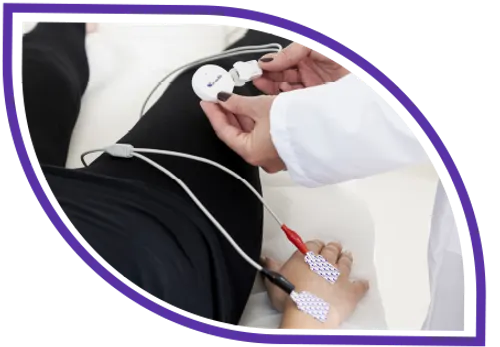

Sono il Dott. Antonio Esposito, Biologo Nutrizionista regolarmente iscritto alla FNOB n°AA_101749.
Ho conseguito la Laurea Triennale in Scienze Biologiche e successivamente la Laurea Magistrale in Scienze dell’Alimentazione e Nutrizione Umana con il massimo dei voti.
Durante il mio percorso ho maturato esperienza in laboratori universitari e ho svolto tirocinio presso un nutrizionista sportivo e triatleta, approfondendo l’applicazione pratica della nutrizione nello sport.
Mi occupo di nutrizione clinica e sportiva con un approccio personalizzato, basato sull’ascolto e sulle più recenti evidenze scientifiche. Sono in costante aggiornamento attraverso corsi di formazione in questi ambiti.
Il mio obiettivo è accompagnarti in un cambiamento concreto e duraturo , attraverso strategie nutrizionali chiare, realistiche e costruite su misura per te.
Il Biologo Nutrizionista è un professionista sanitario abilitato alla valutazione dello stato nutrizionale e all’elaborazione di piani alimentari personalizzati per soggetti sani e con patologie accertate dal medico. Opera in autonomia professionale, promuovendo un’alimentazione equilibrata e scientificamente fondata.
L’attività del Biologo Nutrizionista si basa sulle più recenti evidenze scientifiche, facendo riferimento ai LARN (Livelli di Assunzione di Riferimento di Nutrienti ed energia per la popolazione italiana) e alle Linee Guida per una Sana Alimentazione, strumenti fondamentali per garantire equilibrio, adeguatezza e sicurezza nutrizionale.
Approfondisci i LARN e le Linee Guida →Percorsi nutrizionali mirati alla riduzione della massa grassa e all’aumento della massa muscolare, attraverso un approccio scientifico personalizzato e sostenibile nel tempo.
Strategie alimentari specifiche per migliorare performance, recupero e composizione corporea, adattate al tipo di sport e al livello di allenamento.
Supporto nutrizionale in caso di sindrome dell’intestino irritabile, reflusso, gastrite, colite e altre problematiche digestive, con protocolli personalizzati.
Piani alimentari studiati per modulare l’infiammazione e supportare il sistema immunitario in presenza di patologie autoimmuni (es. Celiachia).
Educazione alimentare e piani nutrizionali per bambini e adolescenti, per favorire una crescita sana e prevenire squilibri nutrizionali.
Percorsi nutrizionali dedicati alle diverse fasi della vita femminile: gravidanza, allattamento, menopausa e condizioni patologiche come PCOS, lipedema, linfedema e osteoporosi.
Durante la prima visita verrà svolta un'anamnesi completa che esplora abitudini alimentari, stile di vita, stati fisiologici, patologie croniche, terapie farmacologiche supportate dall'interpretazione di analisi ematochimiche recenti.
Successivamente verrà svolta l'analisi antropometrica con misurazione delle circonferenze corporee, plicometria e la bioimpedenziometria (BIA) per massa magra, massa grassa e acqua corporea.
Di seguito, verrà mostrato il report ottenuto dalle misurazioni , utile per strutturare il piano alimentare personalizzato in base agli obiettivi prefissati ad inizio visita.
Al termine, verranno mostrati esempi di piani alimentari giornalieri o settimanali, con indicazioni specifiche per ogni paziente, pensati per una gestione equilibrata e salutare in linea con il proprio stile di vita.
Il piano alimentare e i report delle misurazioni effettuate durante la prima visita e le visite di controllo, verranno inviati all'email corrispondente entro 72h.
La valutazione della composizione corporea viene effettuata mediante metodiche validate come la Bioimpedenziometria (BIA).
L’esame bioimpedenziometrico è una metodica sicura e non invasiva che consente di valutare la composizione corporea e lo stato nutrizionale, analizzando massa muscolare, massa grassa e stato di idratazione.
Viene effettuato tramite strumentazione BIA certificata (50 kHz monofrequenza) che misura resistenza e reattanza dei tessuti al passaggio di una corrente alternata a bassissima intensità, impercettibile e priva di effetti collaterali.
Il test prevede l’applicazione di due elettrodi sul dorso della mano e due sul dorso del piede dello stesso lato del corpo. Il paziente viene posizionato supino per alcuni minuti prima della rilevazione, in un ambiente controllato, così da garantire una misurazione accurata e affidabile.

Per ottimizzare il tempo durante la consulenza, ti invito a scaricare e compilare il seguente documento.
Disponibile anche per Consulenze online.
La prima visita e le visite di controllo possono essere svolte comodamente a distanza tramite piattaforme di videoconsulenza come Google Meet, Skype e Zoom.
Riceverai lo stesso supporto personalizzato di una visita in presenza!
Scrivimi per ricevere informazioni o per prenotare una consulenza. Ti risponderò nel più breve tempo possibile.
Puoi contattarmi direttamente tramite questi contatti
Telefono
+39 350 137 0145